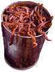
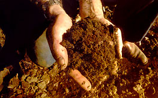
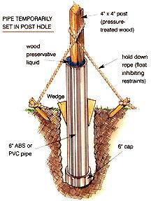
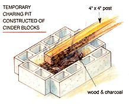
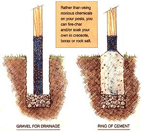

Mountain fences, sandy soil suggestions, and composting with chickens.
Is it true you can use worms to help a septic tank operate correctly? What kind of worms would be best?
by DON AND ANGIE
Kansas
That one's new to us. The health of a septic system depends on the presence of anaerobic bacteria - primitive, single-cell life forms that exist in dark, stagnant places and are responsible for noxious gases like sulfur dioxide (which produce a rotten-egg smell), as well as the toxin that causes botulism in improperly canned food. Septic-tank bacteria, which cannot survive in the presence of sunlight or free oxygen, make a hard crust on top of the fluid contents to keep oxygen out. No self-respecting worm could survive there long because worms depend on oxygen to sustain life. Indeed, they exhibit many of the characteristics of higher life: They have distinct organs, move about on their own and reproduce sexually.
Many varieties of worm can thrive in the water flowing from a properly functioning septic system, which is clear, odorless and nearly sterile, so you may have seen worms wiggling around in the fluid or soil at the outflow of a septic system. But they didn't come out of the tank - they came up from the land.
The crabapple tree in my yard has a ten-foot sucker growing from the base. I would like toknow how to root this sucker and transplant it.
J. HALEY
Idaho
Sorry, J., but it can't be done. The sucker is living off the parent tree's entire root system, so you can't remove it along with a section of root without putting the parent tree at risk. At ten feet, it is far too large to graft onto another root stem. Another fact to consider is that apple trees don't sprout roots from stem wood the way many other plants do.
The best thing you can do with that sucker is lop it off, otherwise the tree will waste too much energy supporting the sucker's younger wood. The sucker, which is not anchored to the trunk the way proper limbs are, is a bit of a hazard in other ways, too. It can easily break off after it has grown, creating serious wounds in the trunk and leaving you with a misshapen parent tree.
If you really want to preserve the sucker, find a wild apple seedling in the woods and graft sprigs from your sucker onto the seedling's trunk; then transplant the youngster into your yard and watch it grow.
I am trying to garden on sand. I realize that organic material is required, but I also wonder if the addition of kitty litter to my compost would enhance the soil's ability to retain water. Are there any negatives that 1 should know about? Can you suggest something better that I could add to improve my soil's water retention?
PAUL
Holland Landing, Ontario Our family used to garden in upper Michigan, not far from your Ontario sand. What passes for soil there drains well, and that's about all we can say about it.
There are a number of strikes against using kitty litter the way you've suggested. First of all, you never know what the stuff will consist of. The best litter is superheated, expanded clay, but it often contains added scent and other impurities; lower-grade litter is nothing but dyed, perfumed and oiled sawdust. Kitty litter that has already been used for its intended purpose carries additional dangers - cats can carry undetected diseases and parasites that can be dangerous to humans. And, even in bulk, kitty litter is an expensive consumer good.
A better bet would be an expanded-mineral soil additive such as Perlite or Vermiculite. Cheaper than litter, they are designed to help soil hold water and they're available by the bale from any nursery. Even less expensive is good Canadian peat. If sweetened with a sprinkling of Canadian ground limestone and tilled in with compost or other fertilizer (peat has practically no plant-food value), the mixture will turn sand to soil practically overnight and keep Canada green in more ways than one. If you lack the time, tools, cash or inclination to enrich the entire garden all at once, mix limed and enriched peat with an equal part of sand in each planting row or hole. That's the way we converted our Michigan sand wedge to a garden - over the course of 40 years.
We live in a mountain valley, at an elevation of 6,500 feet - so we have a very high water table. We're having trouble setting fence posts because the holes we dig quickly fill up with groundwater.
What is the best way to set the posts? Pump out the water and quickly fill with quick-settingcement? Any help you can give us would be appreciated.
NANCY
Bozeman, Montana
Don't even think about trying to set fence posts in the spring. Since you live in the Montana highlands, you probably still have a heap of roof-fallen snow in the north-side shadow of the barn. You didn't mention that the land being fenced contains a pond or a permanent bog, so I'll assume it's a pasture.
This type of land usually consists of scrub or native grasses most of the growing season, but in the springtime it will be saturated from snowmelt and groundwater running down into the valley to be drained away in the valley's stream.
My advice is to wait until late summer or fall to set your posts. By that time, the water table will have fallen out of sight - partly drained off, partly taken up and evaporated away by vegetation. You could use commercially available posts that have been pressure-treated with copper, arsenic and other noxious chemicals, or you could fire-char and/or soak your own in creosote, borax, rock salt or other natural preservatives to protect the posts from insect and fungus damage.
Char or soak the posts to a foot or two above ground level; this is the point where posts stay moist all year and rot away- below ground they remain water-saturated, above ground they stay relatively dry. Dig your holes deep and line the bottoms with several inches of stone. You should anchor the posts with donuts of concrete, but be sure to leave the post bottoms open so the wood can drain well.
We've had a terrible drought in this formerly lush state, and anyone who wanted to grow veggies or flowers had to use whatever creative methods they could think up to gather and save water. I was recently told that an efficient way to water and nourish my garden is to drain my washing machine into it using a PVC pipe. Is this safe? Should I switch from Arm & Hammer to health-food store detergent?
KATHRYN MORRIS
Tampa, Florida
Wash- and rinsewater from sinks, showers and washing machines can be run onto your lawn or garden without worry as long as Tampa continues to enjoy ample winter rains that leach away accumulated salts. Be careful not to allow hot water to contact plants, and if you reuse kitchen sink or dishwasher water, run it through a grease trap.
No commercially available dish or laundry detergents contain dangerously toxic chemicals, but you'll want to dilute "industrial strength" detergents or anything containing bleach before running it out on plants. Arm & Hammer, the detergent we happen to use, is among the mildest detergents made.
As far as nutrients are concerned, most detergents contain phosphates; among them, phosphorous is one of the three major plant nutrients that is often lacking in garden soils and in our supermarket-supplied diets.
Don't let washwater run off your land, especially if it will end up in a canal or other waterway where it can feed a bright-green algae bloom and upset the natural water flora. It's best to run water onto soil that's been amply aerated so that it will sink in quickly. And don't be tempted to use a soaker hose. As we found the hard way, soap scum can quickly clog the pores in soaker hoses.
For additional information on this topic, including suggestions from several folks in dry country who collect rain- and wastewater in a variety of containers, visit www.motherearthnews.com .
I am a new urban gardener and have received conflicting advice about compost. Why is it better to compost my grass and garden waste in a pile rather than give it to my chickens? The chickens will eat anything in my compost pile and break it down faster. I might still have to wait six months to a year to use it, but it takes up less space and could save me money on the cost of feed.
WADE ALDERSON
Citrus Heights, California
It sounds as though you've been exposed to the great "make compost in only 14 days" mystique that serves mainly to sell compost starters, compost thermometers, expensive compost bins, pitchforks and revolving-drum compost makers. By all means, feed all of your yard and garden waste - including new-fallen leaves - to your chickens. Feel free to give them kitchen scraps too, but not meat or fish, which will rot, stink and attract flies ...and worse. Avoid feeding your chickens onion and garlic trimmings, too - they can give eggs an unsavory flavor. Letting your birds do the composting works as well for them as for you: It provides the birds with hours of entertainment, fresh vitamins and nutrients and a lot of healthful bulk. Plus, you will save money on dry feed and the cost of commercial composting products. In addition, what your chickens don't eat will be scratched into hen house litter or outdoor yard/pen mulch, and this will contribute to the eventual garden-fertilizer value of these materials.
|
 Holland Landing, Ontario |
 |
 |
|
 |
 |
|